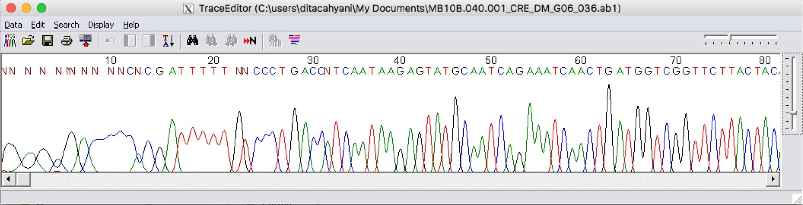
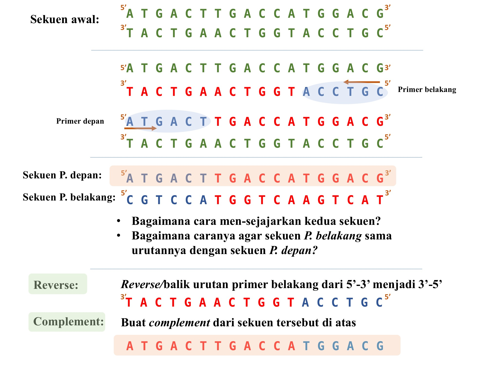
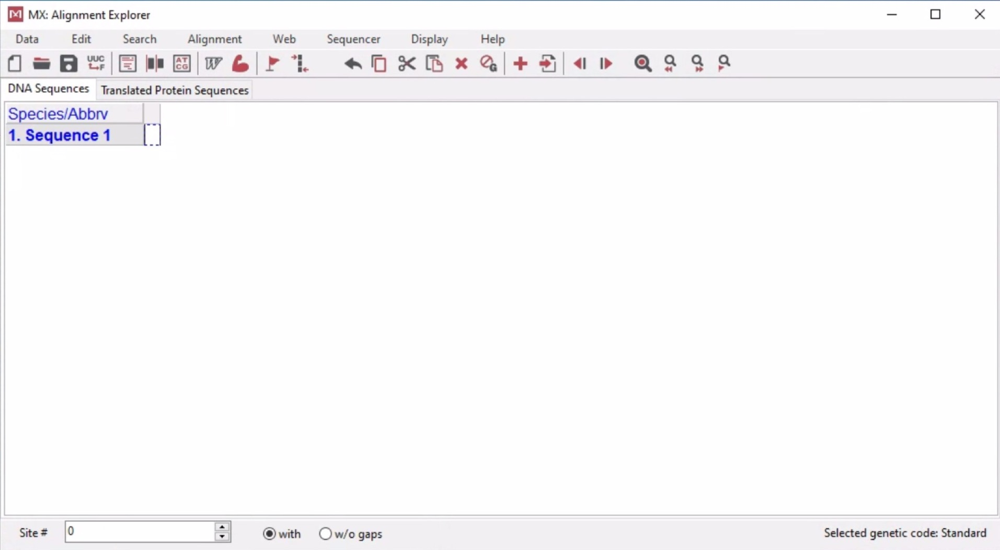
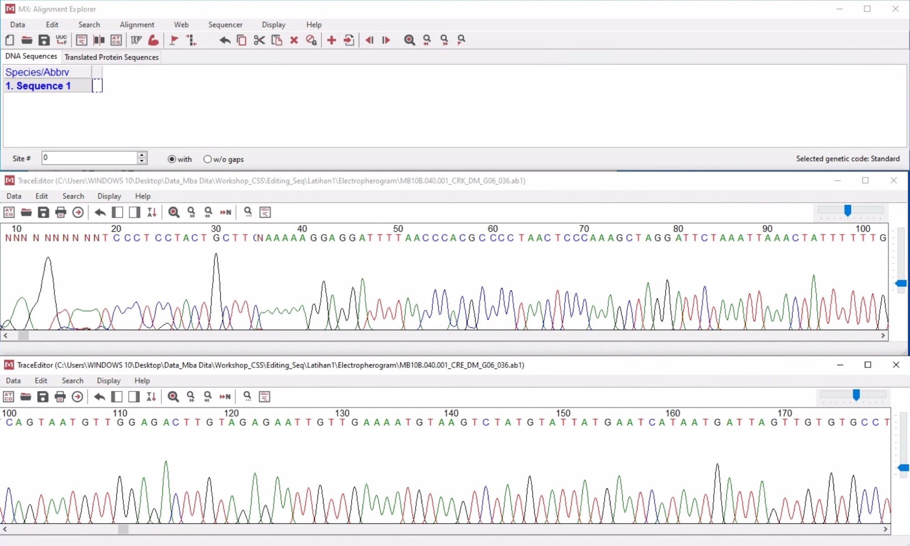
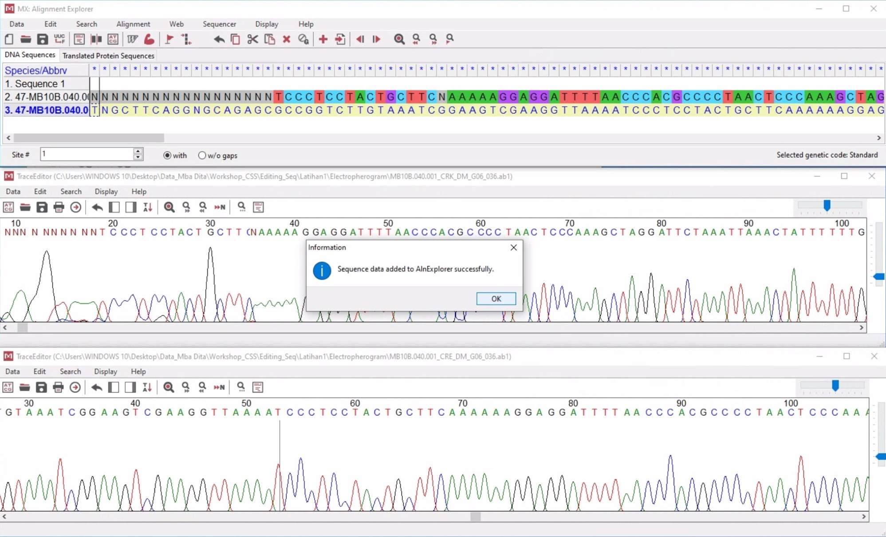
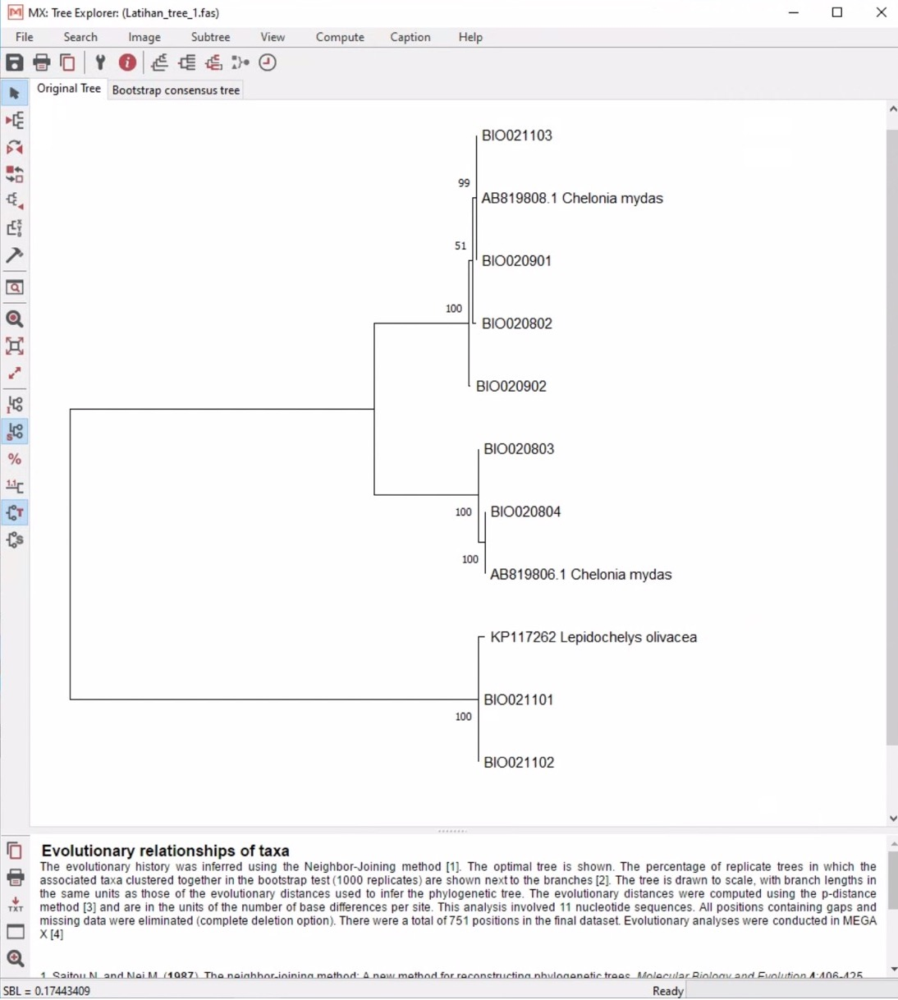
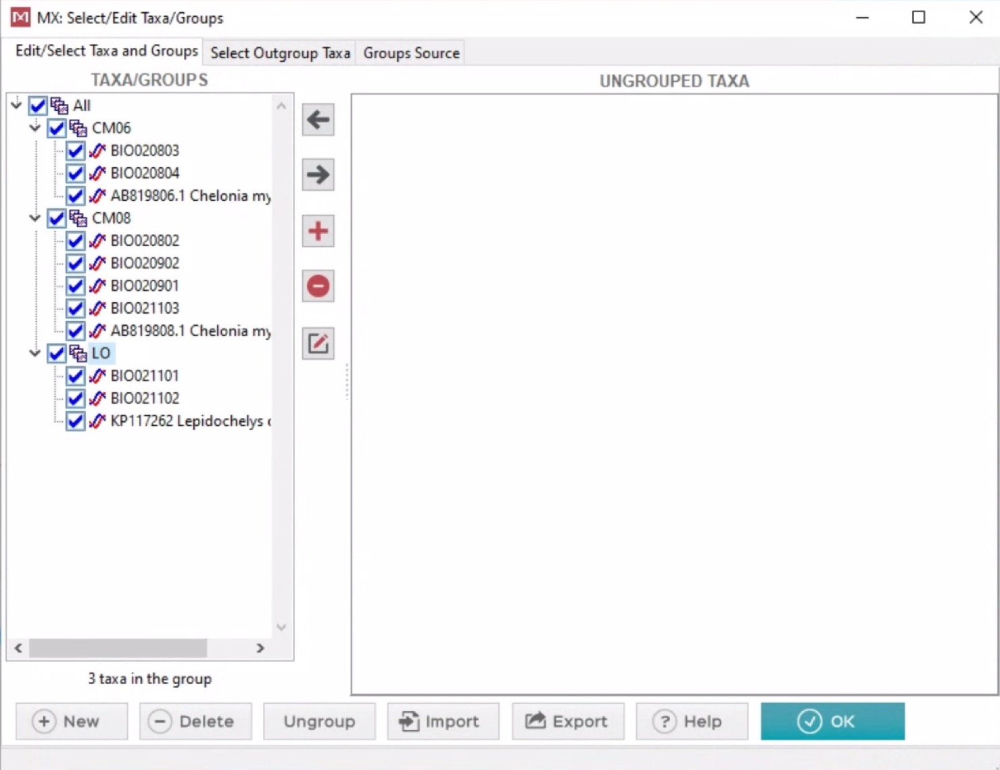
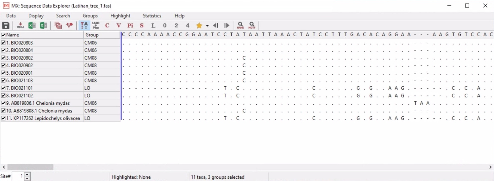

MEGA (https://www.megasoftware.net) merupakan salah satu software yang dapat diunduh secara gratis dan digunakan untuk melakukan editing sekuen hasil dari Sanger Sequencing, menghitung jarak genetik, dan membuat pohon filogeni. Software MEGA pertama kali dikembangkan oleh Masathosi Nei, Sudhir Kumar, dan Koichiro Tamura pada tahun 1993 (Kumar, et al., 1993). Saat ini, kita akan menggunakan MEGA X (Kumar, et al., 2018), sebagai platform untuk melakukan editing sekuen. Pada pendahuluan kali ini, kita akan mengenal beberapa istilah yang umumnya digunakan dalam editing sekuen.
Hasil sekuensing yang kita terima dari Sanger Sequencing Facility berupa “ab1 file” yang berisi electropherogram dari sekuen DNA. Electropherogram memperlihatkan sekuen DNA yang berupa “peak” atau puncak diagram dengan empat warna berbeda yang merepresentasikan empat nukelotida (A, C, G, T) penyusun DNA.

Primer adalah sekuen DNA tunggal yang pendek, umumnya berukuran 18-30 bp (base pair atau pasang basa) yang digunakan untuk meng-inisiasi atau mengawali pemanjangan sekuen DNA pada proses PCR (Polymerase Chain Reaction). Sekuen DNA primer bersifat “complement” dengan sekuen DNA yang akan diamplifikasi. Primer dalam PCR umumnya berjumlah sepasang, terdiri dari Forward (primer depan) dan Reverse (primer belakang).
Sekuen DNA umumnya dibaca dari arah 5’ ke 3’. Sedangkan, primer belakang akan memulai pemanjangan dari 3’ ke 5’, sehingga sekuen yang dihasilkan akan terbaca dari 5’ ke 3’. Akan tetapi, jika di-align atau disejajarkan dengan hasil dari pemanjangan primer depan, sekuen dari primer belakang akan terlihat berbeda. Sehingga, untuk mensejajarkan hasil sekuen primer depan dan belakang sehingga menjadi satu sekuen yang identik, hasil sekuen dari primer belakang, harus di-“reverse complement”. Silakan lihat ilustrasi di bawah ini.

Jarak genetik atau genetic distance adalah jumlah perbedaan antara sekuen satu dengan sekuen lainnya. Jarak genetik juga digunakan untuk melihat perbedaan urutan sekuen antara sebuah kelompok yang terdiri dari banyak individu.
Pohon filogeni adalah diagram percabangan yang menyerupai sebuah pohon bercabang yang digunakan untuk menggambarkan kekerabatan antar makhluk hidup. Dalam biologi molekuler, pohon filogeni dibuat berdasarkan persamaan atau perbedaan antara susunan DNA individu satu dengan individu lain. Pada analisis filogenetik yang menggunakan data sekuen atau urutan nukeotida, digunakan istilah OTU (Operational Taxonomic Units) sebagai cara lain untuk menyebutkan sebuah taxa (organisme, individu atau strain dari satu spesies atau spesies berbeda).
1. Mengedit dan menyimpan hasil editing
“Electropherogram” dengan menggunakan primer D-loop mitochondria; CRA-CRE (Lee et al., 1995). CRA merupakan primer depan (TTCCACCTCTAACTCCCAAAGCTAG) dan CRE merupakan primer belakang (CCTGAAGTAGGAACCAGATG).Align - Edit/Build Alignment – Select an option: Create new allignemnet – Are you building DNA or protein sequence alignment? – Anwer: DNA Kita akan melihat Alignemnt Explorer yang kosong.

Edit - Reverse Compliment pada electropherogram CRE. Kemudian masukkan masing-masing electropherogram ke Alignment Explorer dengan cara klik Data – Add to alignemnt Explorer.
Edit – Select All – kemudian klik tanda Align – Align DNA.Hasil editing sekuen dapat disimpan dalam bentuk:
(Latihan_editing_1.fas)(Latihan_editing_1.meg)2. Pembuatan Pohon Filogeni
(Latihan_tree_1.fasta). Data dalam bentuk fasta file dan sudah melewati proses editing.Phylogeny – Construct/Test Neigbor-Joining Tree – Pilih file Latihan_tree_1.fasta – Open – Input Data Option: Nucleotida Sequences – Confirmation: Protein-coding nucleotide sequence data? – No (karena kita tidak bekerja dengan protein-coding gene).(Latihan_tree_1.mtsx) atau newick tree (Latihan_tree_1.nwk).
3. Menghitung jarak genetik (pairwise distance)
Distance – Compute Pairwise Distance – Buka file Latihan_tree_1.fas - Open – Input Data Option: Nucleotida Sequences – Confirmation: Protein-coding nucleotide sequence data? – No (pastikan sekuen sudah di-align).Latihan_distance_1.xls4. Menghitung jarak genetik antar group
Latihan_tree_1.meg Klik Data – Select Taxa and Groups – buat nama group baru dan masukkan masing-masing anggota group.

Distance – Compute Within Group Mean Distance atau Compute Between Group Mean Distance – buka file yang sudah terbuka di Mega - dari sini, kita akan diberikan beberapa parameter, kita akan set sesuai default.Latihan_distance_2.xlsLatihan_tree_2.meg5. Lainnya
Latihan_tree_2.meg dan melakukan beberapa analysis.(MTSX file) kita bisa membukanya dalam Mega.Data yang digunakan dalam latihan ini merupakan data yang sudah dipublikasikan pada:
Allen, G.R., Erdmann, M.V, & Cahyani, N.K.D. (2018). Chrysiptera uswanasi, a new microendemic species of damselfish (Teleostei: Pomacentridae) from West Papua Province, Indonesia. Journal of the Ocean Science Foundation 31: 74-86.
Pertiwi, N.P.D., Suhendro, M.D., Yusmalinda, N.L.A., Putra, I.N.G., Putri, I.G.R.M., Artinigsih, E.Y., Al-Malik, M.D., Cahyani, N.K.D., Sembiring, A. (2020) Forensic genetic case study: Species identification and traceability of sea turtle caught in illegal trade in Bali, Indonesia. Biodiversitas 21:4276-4283
Kumar, S., K. Tamura, and M. Nei (1993) MEGA: Molecular Evolutionary Genetics Analysis. Ver. 1.0, The Pennsylvania State University, University Park, PA.
Lee WJ, Conroy J, Howell WH, Kocher TD (1995) Structure and evolution of teleost mitochondrial control regions. J Mol Evol 41:54–66
Lemey, P., Salemi, M., and Vandamme, A. (eds). 2009. The Phylogenetic Handbook: A Practical Approach to Phylogenetic Analysis and Hypothesis Testing. Cambridge University Press. 2nd edition. 750 pp.
Sudhir Kumar, Glen Stecher, Michael Li, Christina Knyaz, and Koichiro Tamura (2018) MEGA X: Molecular Evolutionary Genetics Analysis across computing platforms. Molecular Biology and Evolution 35:1547-1549
Lihat halaman depan web ini untuk mendapatkan detail tentang hak cipta